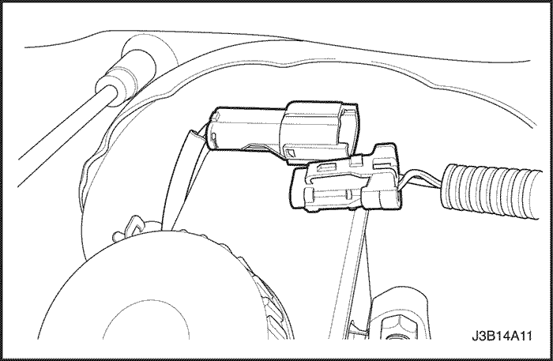

SECCIÓN 4B
CILINDRO PRINCIPAL
ESPECIFICACIONES
Especificaciones para la fijación del sujetador
| Aplicación | N•m | Lb-Ft | Lb-In |
| Conductos de freno | 16 | 12 | - |
| Tuercas de fijación del cilindro principal | 18 | 13 | - |
| Válvulas equilibradoras | 22 | 16 | - |
DIAGNÓSTICO
Controlar la válvula de regulación de frenos
Emplee los dos calibradores de presión de frenado para comprobar las válvulas equilibradoras de freno sujetas al cilindro principal en los sistemas de frenado sin ABS. Estas válvulas limitan la presión de salida de los frenos traseros al alcanzarse una presión determinada en el cilindro principal (en los sistemas de frenado con ABS, el conjunto del modulador hidráulico/paquete de motor controla la presión hidráulica de ambos cilindros de rueda trasera o pinzas de freno traseras, así como de las pinzas de freno delanteras).
Al comprobar las válvulas equilibradoras de freno, asegúrese de verificar la presión del conducto hidráulico simultánea y diagonalmente en los ejes delantero y trasero.
Para medir la presión, proceda según los pasos siguientes:
- Desmonte la válvula de purga y monte el calibrador de presión en uno de los cilindros de freno traseros.
- Monte otra válvula de purga y otro calibrador de presión en el freno delantero diagonalmente opuesto.
- Incremente la presión pisando fuerte varias veces sobre el pedal de freno (la presión que indica el calibrador no está regulada y representa la presión hidráulica real del sistema de frenado).
- Incremente la presión hasta alcanzar los valores de prueba del siguiente esquema de comprobación de válvulas equilibradoras.
| Modelo | Número de referencia de presión de pendiente y conmutación en la cámara de válvulas. | Valor de presión de entrada del manómetro en el eje delantero, en kPa (psi) | Valor de presión de salida del manómetro en el eje delantero, en kPa (psi) |
| . | . | 500 (73) | 500 (73) |
| N/B, H/B | 0,3/30 | 4 500 (653) | 3 450 ± 200(500 ± 29) |
| . | . | 10 000 (1.450) | 5 100 ± 300(740 ± 44) |
| . | . | 500 (73) | 500 (73) |
| WAGON | 0,3/40 | 5 500 (798) | 4 450 ± 200(645 ± 29) |
| . | . | 10 000 (1.450) | 5 800 ± 300(841 ± 44) |
Importante: Si la presión supera los 10.000 kPa (1.450 psi), el valor de presión del calibrador trasero no será preciso.
- Desmonte los calibradores del circuito de freno analizado y repita la comprobación en el circuito restante.
- Desmonte los calibradores del circuito de freno analizado y repita la comprobación en el circuito restante.
MANTENIMIENTO Y REPARACIÓN
SERVICIO CON VEHÍCULO EN MARCHA



Conjunto de cilindro maestro
(se muestra para conducción con volante a la izquierda; similar con volante a la derecha)
Procedimiento de extracción
- Desenchufe el conector eléctrico del depósito.

- En los vehículos con sistema de frenado ABS, desconecte los conductos de freno del cuerpo del cilindro principal.
- En los vehículos sin sistema de frenado ABS, desconecte los conductos de freno de las válvulas equilibradoras.
- En los vehículos con caja de cambios manual, desconecte el clip de la conexión de la manguera de embrague con el cilindro principal. Aparte el clip a un lado.
- Desmonte la manguera de embrague del cilindro principal (si está equipado con ésta).
- Tapone la abertura de los conductos de freno para evitar la pérdida de líquido y su contaminación.
- Desmonte las tuercas de fijación del sobrealimentador de potencia.
- Desmonte el conjunto del cilindro principal.
- Vierta el líquido de freno.
Procedimiento de instalación
- Monte el conjunto del cilindro principal con las tuercas de fijación nuevas.
Apretar
Apriete las tuercas de fijación del cilindro principal a 18 N• (13 lb-ft).
- En los vehículos con sistema de frenado ABS (como el mostrado), conecte los conductos de freno al cuerpo del cilindro.
- En los vehículos sin sistema de frenado ABS, conecte los conductos de freno a las válvulas equilibradoras.
Apretar
Apriete los conductos de freno a 16 N•m (12 lb-ft).
- En los vehículos con caja de cambios manual, conecte el clip de la conexión de la manguera de embrague al depósito del cilindro principal (si está equipado con ello).
- Enchufe el conector eléctrico.
- Añada líquido de frenos.
- Revise si hay fugas y vuelva a comprobar el nivel de líquido.
- Purgue el sistema de frenado. Consulte la Sección 4A, Frenos hidráulicos.
Depósito de líquido de frenos
Procedimiento de extracción
Importante: Desmonte el depósito sólo si se debe sustituir por estar dañado o presentar fugas.
- Desenchufe el conector eléctrico del depósito.
- En los vehículos con caja de cambios manual, desconecte el clip de la conexión de la manguera de embrague con el cilindro principal. Aparte el clip a un lado.
- Desmonte la manguera de embrague del cilindro principal.
- Haga palanca con un destornillados para soltar el depósito.
- Incline el depósito y tire de él hacia arriba para desmontarlo.

- Desmonte los cierres del depósito del cuerpo del cilindro principal.
Procedimiento de instalación
- Lubrique los nuevos cierres con líquido limpio de frenos. Monte los cierres en el cuerpo del cilindro.
- Monte el depósito en el cuerpo del cilindro principal.
- En los vehículos con caja de cambios manual, conecte el clip de la conexión de la manguera de embrague al cilindro principal.
- Añada líquido de frenos.
- Elevar y colocar soportes adecuados bajo el vehículo.
- Purgue el sistema de frenado. Consulte la Sección 4A, Frenos hidráulicos o la Sección 4F, Sistema de Frenos Antibloqueo.Purgue el cilindro principal del embrague. Consulte la Sección 5C, Embrague.
- Baje el vehículo.
- Enchufe el conector eléctrico del depósito.
REPARACIÓN DE LA UNIDAD
Mantenimiento de cilindro maestro
Procedimiento de desarmado
- Desmonte el cilindro principal. Consulte "Conjunto del cilindro principal"en esta misma sección.
- Desmonte el depósito del líquido de frenos. Consulte "Depósito del líquido de frenos" en esta misma sección.
- Desmonte el anillo obturador del cuerpo del cilindro.
Aviso: Al extraer el anillo de retención, tenga cuidado de no dañar el pistón ni la pared del cilindro.
Importante: Se puede emplear una barra de soldadura o equivalente en un puerto de compensación para mantener presionado el pistón.
- Desmonte y deseche el anillo de retención del cuerpo del cilindro (se muestra el cuerpo de cilindro principal sin ABS) con ayuda de un destornillador adecuado.
- Desmonte el pistón primario (se muestra el cuerpo de cilindro principal con ABS).
- Extraiga con cuidado el conjunto del pistón secundario, incluido los muelles, del cuerpo del cilindro principal.
Procedimiento de ensamblaje
Aviso: No emplee abrasivos en el cuerpo del cilindro principal. Los abrasivos pueden dañar el cuerpo del cilindro.
Importante: Las piezas de goma y anillos de retención deben ser desechados y sustituidos con piezas nuevas.
- Limpie todas las piezas con alcohol desnaturalizado o líquido de frenos limpio. Seque las piezas con aire comprimido.
- Compruebe si el cuerpo del cilindro principal presenta muescas o corrosión. Si hay una presencia clara de muescas o corrosión, sustituya el cuerpo del cilindro principal.
- Lubrique el cuerpo del cilindro principal (se muestra el cilindro principal sin ABS) con líquido de frenos limpio.
- Inserte con cuidado el cuerpo del conjunto del pistón secundario hasta que el pistón contacte con la base del cuerpo del cilindro. En caso necesario, emplee un mandril de madera o plástico.
- Inserte el pistón primario.
- Encaje los pistones en el cuerpo del cilindro con ayuda de un mandril de madera o plástico.
Aviso: Durante el montaje del nuevo anillo de retención, ponga cuidado en no dañar el cuerpo del cilindro.
- Monte el nuevo anillo de retención en la ranura del cuerpo del cilindro (se muestra el cuerpo de cilindro principal sin ABS). Desmonte la barra de soldadura.
- Una vez realizada la instalación, mueva atrás y adelante los pistones para asegurarse de que se desplacen libremente.
- Lubrique el anillo obturador e inserte el cierre en el cuerpo del cilindro. El lateral abierto debe estar orientado hacia el exterior hasta que el cierre repose sobre el pistón.
- Monte el depósito de líquido de frenos del cilindro principal. Consulte "Depósito del líquido de frenos" en esta misma sección.
- Monte el conjunto del cilindro principal. Consulte Conjunto del cilindro principalen esta misma sección
- Elevar y colocar soportes adecuados bajo el vehículo.
- Purgue el sistema de frenado. Consulte la Sección 4A, Frenos hidráulicos o la Sección 4F, Sistema de Frenos Antibloqueo.
- Baje el vehículo.
DESCRIPCIÓN GENERAL Y FUNCIONAMIENTO DEL SISTEMA
Cilindro principal
El cilindro principal ha sido diseñado para su empleo en un sistema de partición en diagonal. El pistón primario gestiona un freno delantero y otro trasero opuesto diagonalmente. El pistón secundario gestiona los frenos delantero y trasero opuestos. El cilindro principal incorpora las funciones del cilindro principal doble estándar y, aparte, un indicador de nivel de líquido bajo y las válvulas equilibradoras del sistema de frenos antibloqueo. Las válvulas equilibradoras limitan la presión de salida de los frenos traseros una vez alcanzada una presión predeterminada en el cilindro principal.
Importante:
- Sustituya todos los componentes incluidos en los kits de reparación empleados para el servicio del cilindro principal.
- Lubrique las piezas de goma con líquido de frenos limpios para facilitar el montaje.
- No emplee lubricantes deteriorados en las piezas del sistema de freno. Ello podría dañar los componentes de goma.
- Si se desmonta o desconecta cualquier componente hidráulico, puede ser necesario purgar todo o parte del sistema de frenado.
- Los valores de par especificados son sólo aplicables a elementos de fijación secos y sin lubricar.
- Efectúe todas las operaciones de servicio sobre un banco limpio, sin resto alguno de aceite mineral.
Sensor de nivel de líquido
El cilindro principal está equipado con un sensor de nivel de líquido. Este sensor activará la luz BRAKE si se detecta un nivel de líquido bajo. Una vez corregido el nivel de líquido, la luz BRAKE se apagará.